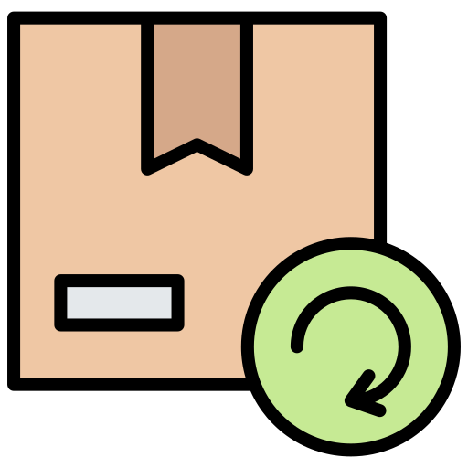

What We Do
Search & Report
Find or report lost items easily.

Connect with Finders
Communicate securely to claim items.

Retrieve Your Item
Pick up your item on campus.
A Lost & Found Management System for UCC
Get StartedFind or report lost items easily.
Communicate securely to claim items.
Pick up your item on campus.
Imagine losing your student ID right before an important exam or misplacing your wallet after a long day on campus. The frustration, anxiety, and time spent searching can be overwhelming. Many students rely on word-of-mouth, random social media posts, or scattered bulletin board notices, but these methods are unreliable and often ineffective. The need for a structured, campus-wide lost and found solution inspired the creation of "Until I Found You", a digital system designed to streamline and improve how lost items are reported and recovered.
The system provides an easy-to-use platform where students can report missing items, browse found objects, and communicate with finders or owners —all in one convenient place. With features like categorized listings, image uploads, and a built-in messaging system, users can quickly identify and verify lost belongings. Real-time notifications alert students when an item matching their description is found, eliminating the need for endless searching. Additionally, a secure login system ensures that only verified users can interact on the platform, protecting personal information and preventing false claims.
Key Features:
🔹 Secure & Verified Access: Only registered students and staff can report or claim lost items.
🔹 Instant Alerts: Get notified immediately when your lost item is found.
🔹 Image Uploads: Easily identify items with clear pictures instead of vague descriptions.
🔹 Effortless Communication: Use the built-in chat to coordinate item returns securely.
🔹 Mobile-Friendly: Access the system on any device, anytime, anywhere.
More than just a lost-and-found tool, "Until I Found You" fosters a sense of community and responsibility among students. It encourages honesty by making it easy for finders to return lost items, reducing the number of unclaimed belongings left on campus. By streamlining the lost-and-found process, the system saves time, minimizes stress, and helps students recover their valuables more efficiently.
With just a few clicks, you can report or search for lost belongings—making item recovery faster and more reliable. Join the community and never worry about losing something important again!
Start by visiting the homepage and clicking the “Get Started” button. You will be redirected to the log-in page and then in the main dashboard, where you can report a lost item or browse found items.
If you’ve lost an item, click on “Report Lost Item” and provide the necessary details, including:
* Item name and description
* Location and date it was lost
* Contact information
* An image of the lost item (if available)
* Any distinguishing marks or feature
Once submitted, your report will be visible to other users searching for lost belongings.
Use the “Search Items” page to find your lost belongings. You can filter results by item type, location, or date found. Each listing will include a description and an image. You may also set up notifications to be alerted when a matching item is found.
If your lost item is listed, click on it and select “Claim”. Provide proof of ownership (such as a receipt, detailed description, or identifying marks). The finder may request further verification before handing over the item.
If you found an item, submit a report under the “Found Items” section. Include an image, date, and location details to help the owner recognize it. The system will attempt to match it with existing lost item reports and notify potential owners.
The system offers a secure chat feature where finders and owners can coordinate safely without sharing personal contact details. The chat ensures privacy and security while arranging pickup details. Please be respectful and only use the chat for its intended purpose.
Once an item is returned to its rightful owner, the finder should mark it as “Returned” in the system. Similarly, the owner should confirm the successful retrieval of their item. This helps keep the database up-to-date and prevents unnecessary duplicate reports.